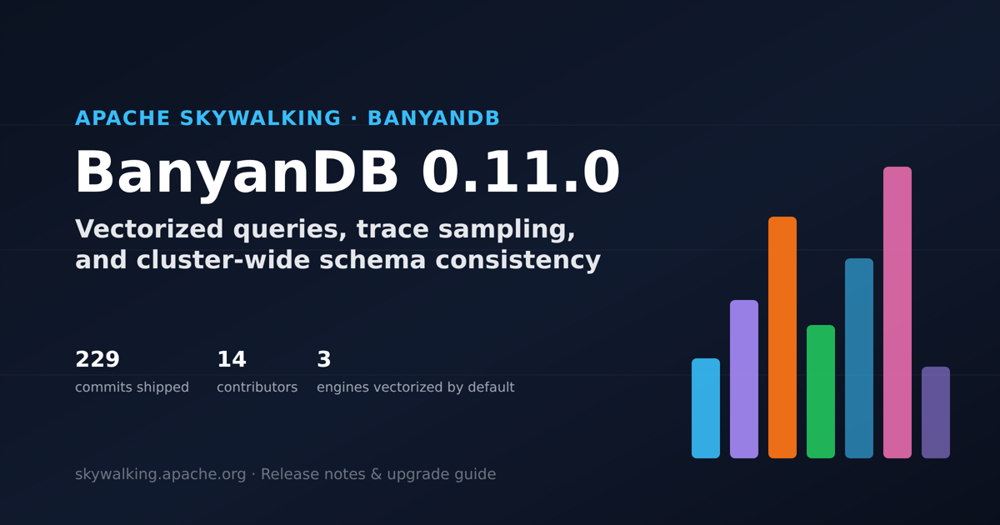

BanyanDB 0.11.0：新特性与升级指南
译自英文原文：BanyanDB 0.11.0: What’s New and How to Upgrade。

BanyanDB 0.11.0 已正式发布。向量化查询从可选功能升级为默认路径；Trace 后采样有了可插拔流水线；集群级 Schema 一致性屏障补上了正确性缺口；编码智能体可以通过两条新路径用自然语言查询 BanyanDB；etcd 支持也已移除，Schema Registry 统一使用 Property 模式。
我们逐一梳理了此次发布的 229 次提交，整理出集群运维人员需要关注的功能、性能改进、API 变化和升级风险。
核心要点
- Measure、Stream 和 Trace 的向量化查询路径现已默认启用，可减少扫描密集型查询的内存分配；但这也改变了滚动升级顺序：必须先升级 Liaison 节点，再升级 Data 节点。
- 新增 Trace 后采样流水线，在数据落盘后的合并中（in-merge）和最终化阶段（finalize-time）执行采样。此时 Trace 相对更完整，采样依据也更充分。流水线通过可插拔的
.so采样器插件决定保留或丢弃哪些 Trace；即使一次合并涉及数百万条链路，其内存占用也有明确上限。- 编码智能体现在可以通过两种方式使用自然语言查询 BanyanDB：一种是带有
bydbqlSkill 的 Claude Code/Codex MCP 插件，另一种是独立的bydbctl agent终端界面。- etcd 支持已完全移除，API 版本也升级至 0.11，因此请安排维护窗口执行升级。队列和生命周期指标同样经过了重新设计。
向量化查询现已默认启用
列式（向量化）查询路径使用批量列式流水线取代逐行 Protobuf 序列化。自 0.10 起，Measure 查询已经默认使用该路径；在 0.11 中，Stream 和 Trace 查询也加入其中：--stream-vectorized-enabled、--trace-vectorized-enabled 和 --measure-vectorized-enabled 均默认为 true。
对于 Measure 查询，单节点场景的覆盖现已完整：扫描、通过 BatchAggregation 实现的 GroupBy+Agg、标量归并（scalar reduce）、原始 GroupBy、TopN/BottomN、order_by，以及边界错误的一致性，都会通过向量化分派执行，并保持与逐行路径相同的语义。其 gRPC 传输格式与逐行路径的输出逐字节一致；团队还通过 6 小时的生产环境持续运行测试（soak test）验证了这一点，期间未发现任何差异。分布式 Map 模式的部分聚合和多 Group 请求目前仍使用逐行路径，后续版本将继续完善。
这也是本次发布中最重要的滚动升级破坏性变更。所需的升级顺序请参阅下文的破坏性变更与安全升级方法。
可插拔的 Trace 后采样流水线
Trace 前采样在探针端就决定是否采集和上报链路数据。BanyanDB 0.11 提供的 Trace 后采样则在数据已经落盘后进行。此时 Trace 相对更完整，可用于采样判断的信息也更充分，但不意味着每条 Trace 都已完整到齐。
链路数据保留得越多，存储成本越高。后采样根据落盘后的 Trace 信息决定哪些链路需要继续保留。0.11 在存储节点加入了合并中 Trace 后采样过滤器，按 Group 执行采样器链，从核心 Part 和二级索引 Part 中安全移除未保留的链路。采样器可按 Group 动态配置，也支持运行时注册、更新和移除。
后采样流水线还要处理漏采样和内存占用问题。
-
**最终化采样（Finalization sampling）**提供尽力而为的兜底处理。每个节点只有一个并发度为 1 的扫描器，定期扫描已经冷却的 Segment，并让每个 Shard 尚未最终化的 Part 通过所属 Group 的采样器链进行强制合并。它复用现有的热合并路径，因此不会与热合并信号量竞争。每个 Part 都带有
finalizeGen标记；该标记会先于 Part 元数据写入磁盘，因此即使进程崩溃，重放时也不会重复采样。 -
Drop set 有大小上限。 Shard 的首轮最终化可能会将所有已冷却的 Part 选入同一次合并。如果不加限制，包含 1,800 万个条目的 Drop set 会占用约 1.3 GiB 活跃堆内存和 2.6 GiB 预留堆内存，而该进程还需要同时处理查询。
流水线对采样决策数量设置上限，裁剪谓词保持不变。某次合并的 Drop set 满后，后续原本建议丢弃的记录会直接保留，不再加入集合。集合仍完整记录实际执行的丢弃操作，不会产生孤立或遗漏条目。上限由内存保护器按
limit/(16×CPUs)计算，使并发合并的总占用保持在约limit/16。
完整的推导过程请参阅 Trace Drop Set 边界设计文档。
版本自带适配 SkyWalking 自有 Trace Schema 和 Zipkin 的采样器插件（sw-trace-sampler.so、zipkin-trace-sampler.so），以及带资源上限的遥测 SDK。插件可以输出自身的指标和日志，SDK 会限制基数和日志开销，避免占用过多宿主进程资源。
完整的配置 Schema 请参阅 Trace Pipeline 插件 SDK 与采样器配置参考。
集群级 Schema 一致性
在 0.11 之前，Schema 变更（例如创建 Stream、添加 Index Rule 或删除 Group）可能尚未应用到集群中的所有节点，元数据服务就已经返回成功。此时，如果查询命中尚未追上进度的节点，便可能看到过期或缺失的 Schema。
0.11 引入了客户端可观测的 Revision 跟踪和屏障 RPC，补上了这一缺口。具体字段和 RPC 请参阅下文的 API 变更；完整 RPC 契约请参阅 Schema 一致性客户端接口与 SchemaBarrierService 参考。
第二阶段将屏障扩展至整个集群：通过新增的 NodeSchemaStatusService，将相同调用分发到每个 Liaison 和 Data 节点，并处理混合版本和成员变更场景。调用方需要显式启用这组功能。请求值为零时仍按原有逻辑处理，不传入 Revision 的现有客户端不受影响。
编码智能体的自然语言查询
0.11 为编码智能体提供了两种相互独立的 BanyanDB 查询方式，无需手写 BydbQL。
第一种是 Claude Code / Codex 插件。它将 BanyanDB MCP Server 与 bydbql Skill 打包在一起，可针对 STREAM、MEASURE、TRACE 和 PROPERTY 资源将自然语言转换为 BydbQL。直接从仓库安装即可使用：Claude Code 运行 /plugin install apache/skywalking-banyandb，Codex 使用对应的 codex plugin add 流程。
安装后，Claude Code 或 Codex 会话会获得四个 MCP 工具：
list_groups_schemas：发现 Schema。get_generate_bydbql_prompt：生成查询。只有这个工具会注入实时索引字段列表，并强制执行ORDER BYIndex Rule 替换。validate_bydbql：调用预构建的 Go 二进制文件，仅解析语句，完成语法和安全校验。list_resources_bydbql：执行已校验的只读语句。
第二种是 bydbctl agent。这是一个独立的双窗格终端界面，可直接驱动 Codex 或 Claude Code CLI 进程，以自然语言交互查询 BanyanDB。它会发现 Schema、生成类型明确的查询计划，并执行只读查询。
bydbctl agent 不持有 AI 提供商凭据，需要先为它调用的 CLI 单独完成认证。MCP 插件把查询能力加入已有的 Claude Code/Codex 会话；bydbctl agent 则提供专用的交互界面。
如需开始使用该终端界面，请参阅 bydbctl agent 配置与使用文档。
同期发布：Canopy、迁移工具及更多功能
0.11 同时加入四项能力：
- Canopy 是采用 Fastify BFF 的独立 React SPA，不依赖现有
ui/。它支持 Group/Stream/Measure/Trace/IndexRule 元数据和 Property Collection 的 CRUD，以及 TopN 聚合管理。查询控制台在分布式集群上完整支持 WHERE 子句。它还拥有独立的 Docker 镜像、CI 和端到端测试套件。（功能说明依据canopy/相关提交及设计文档整理；CHANGES.md 对 Canopy 的介绍较简略。） - 迁移工具新增
copy、verify和analyze子命令。在早期版本 Trace/生命周期迁移能力的基础上，现在也支持 Measure 和 Stream 数据，包括索引模式的 Measure。 - Schema 变更时可以修改 Tag 类型，而不会破坏旧 Part。 如果 Tag 类型发生变化（例如从 int 变为 string），BanyanDB 现在会将每种类型变体分别持久化到各自的文件（
{tag_name}.{tag_type}.tf）中，而不再覆盖原文件；查询和合并逻辑则通过（名称、类型）二元组完成解析。该机制适用于 Measure、Stream、Trace 和 SIDX Part。 - Trace Part 合并采用公平的快/慢通道调度，短合并不再排在耗时较长的合并之后；队列等待时间现通过
total_merge_queue_latency暴露。
运行方法请参阅 Canopy 配置与架构指南。
性能改进
0.11 还减少了点查解码、采样、备份上传和生命周期迁移的开销。
- Trace 和 Stream 的点查更快：通过延迟解码 Block 元数据，只读取少量行的查询可以省去预先解码元数据的开销。
- Trace 后采样器的解码路径得到优化：延迟解码、字符串和 Tag 的零拷贝处理、提前拒绝 Tag、直接读取标量，以及缓存规则前缀，使 SkyWalking 和 Zipkin 采样器的采样决策成本与 Tag 规则成本大约减半。
- GCS 备份上传更快：每个对象及其校验和元数据现在通过一次请求写入，省去了每个对象一次的
Update往返。 - 生命周期迁移的堆内存峰值降低约 80%。 通过流式 Dump Reader 和按大小分级的序列化缓冲池，不再将大型 Measure Part 整体读入内存；下图对比了相同工作负载下行重放的堆内存峰值。
API 变更
API 版本也已升级至 0.11，这项变更会直接影响升级流程，详见下文的破坏性变更。本节先列出需要显式启用的增量 API：
- Group/IndexRule/IndexRuleBinding/TopNAggregation 的创建和更新响应新增
mod_revision；所有删除响应新增delete_time；新增created_at，且更新时会保留该字段。 - 新增
STATUS_SCHEMA_NOT_APPLIED状态码，用于 Revision 超前于服务端缓存的写入与查询。 - 新增
SchemaBarrierServiceRPC：AwaitRevisionApplied、AwaitSchemaApplied和AwaitSchemaDeleted。客户端可以阻塞等待，直到 Schema 变更传播至整个集群后再继续。 - 新增
QueryRequest.group_mod_revisions/QueryResponse.group_statuses，用于按 Group 对查询路径进行 Revision 门控。 - BydbQL 新增
?位置参数绑定：可以绑定值，而无需将其以字符串方式插入查询文本，从而像参数化 SQL 一样防止 QL 注入。可复用的Prepared绑定类型还在 gRPC 查询路径之上增加了预处理语句缓存，并提供有界缓存、Top-K 保留、缓存与慢查询可观测性；慢查询日志中还会对绑定参数脱敏。 - 新增校验：Measure 的
ShardingKey现在必须包含所有EntityTag，以确保实体局部性。
破坏性变更与安全升级方法
项目升级指南列出了以下兼容性要求。
1. API 版本 0.11。 不支持同时包含 0.10 与 0.11 节点的集群。此次升级需要维护窗口：停止写入和所有 API 客户端，停止全部 0.10 节点，将所有节点升级至 0.11 并启动，再将 API 客户端升级为要求 0.11 版本；确认 Schema 初始化和数据写入正常后，方可恢复流量。回滚时同样必须先停止所有客户端和节点——无论升级还是回滚，都绝不能运行 0.10/0.11 混合版本集群。
2. 向量化查询路径：先升级 Liaison，再升级 Data。 启用向量化路径的分布式 Data 节点会在 Liaison↔Data 线路上发送原生列式 Frame，而不是 Protobuf。0.11 Liaison 可以解码两种格式——它根据每条消息 Frame 开头的魔数进行分派；但旧版 Liaison 完全不具备 Frame 解码器，因此无法反序列化响应。这改变了常规的滚动升级顺序：
| 升级顺序 | 结果 |
|---|---|
| 先 Liaison，后 Data | 安全。 新版 Liaison 可以同时解码 Frame 和 Protobuf；旧版 Data 节点在升级前会继续发送 Protobuf。 |
| 先 Data，后 Liaison | 在整个发布过程中，查询都会失败。 |
单机部署不受影响，因为只有分布式 Data 节点会发送这种 Frame。如果无法控制节点升级顺序，请在启动新版 Data 节点时添加 --stream-vectorized-enabled=false --trace-vectorized-enabled=false --measure-vectorized-enabled=false，并在所有 Liaison 升级完成后再启用这些选项。回滚也使用相同的三个选项；由于它们只影响查询路径和传输格式，不影响磁盘格式，因此无需迁移数据。对于沿用此前版本“Data 节点优先”假设的自动化滚动升级流水线，这项变更最容易造成问题。
3. etcd 已移除。 现在仅支持基于 Property 的 Schema Registry。所有 --etcd-* 选项和 --namespace 均已移除，--node-discovery-mode 也不再接受 etcd（请使用 dns、file 或 none）。如果 --schema-registry-mode 或 --node-discovery-mode 仍然引用 etcd，则必须先迁移至基于 Property 的 Registry，之后才能运行 0.11。
4. 队列与生命周期指标经过重新设计。 queue_pub/queue_sub 指标现统一采用带 operation/group 标签的模型（旧有 topic 标签和 Chunk 排序指标族已移除）；生命周期健康指标新增 remote_node/remote_role/remote_tier/group 标签，而 banyandb_lifecycle_self_identity_resolution_total 则被完全移除。仪表盘和告警需要在升级前改用新版指标。
完整的维护窗口检查清单请参阅“升级至 0.11”完整指南。
版本背后
从 v0.10.3 到 v0.11.0，14 位贡献者共提交了 229 次非合并提交，下图列出了提交数分布。
后续计划
向量化引擎的发布说明也列出了尚未完成的工作：分布式 Map 模式的部分聚合和多 Group（多 Measure）请求仍然使用逐行路径。这两项查询能力预计要到后续版本才会补齐。随着 SDK 和开发工具包稳定下来，Trace 后采样插件也有望在现有两个项目自带采样器的基础上继续增加。
常见问题
升级至 0.11 时，是否必须调整自动化升级顺序？
是的。如果运行分布式集群，且启用了任一向量化选项（默认即为启用），就必须先升级 Liaison 节点，再升级 Data 节点；这与此前所有版本的建议顺序相反。另一种做法是在新版 Data 节点上暂时禁用向量化选项，等所有 Liaison 升级后再启用。
可以继续使用 etcd 进行 Schema 发现吗？
不可以。在 0.11 中，--schema-registry-mode 仅接受 property，且所有 --etcd-* 选项均已移除。请在升级前迁移至基于 Property 的 Registry。
除性能外，向量化查询路径的正确性是否值得信赖？
Measure 路径经过了 6 小时的生产环境持续运行测试（soak test），输出与逐行路径逐字节一致，未发现差异；针对各类工作负载的基准检查也已通过。如果确实遇到不一致，三个引擎（Measure、Stream、Trace）都保留了回滚选项（--{measure,stream,trace}-vectorized-enabled=false），可立即切回逐行路径，且无需迁移数据。
BydbQL 现在支持参数化查询了吗？
是的。0.11 为 BydbQL 新增了 ? 位置参数绑定，可以绑定值，而无需将其以字符串方式插入查询文本，从而防止 QL 注入。可复用的 Prepared 绑定类型还在 gRPC 查询路径中提供预处理语句缓存，并支持有界缓存、Top-K 保留、缓存与慢查询可观测性；慢查询日志中会对绑定参数脱敏。
BydbQL MCP 插件与 bydbctl agent 有何区别？
MCP 插件会为正在运行的任意 Claude Code 或 Codex 会话添加四个 BanyanDB 查询工具（Schema 发现、生成、校验和执行）。安装一次后，即可与其他工作一起使用。bydbctl agent 则是独立的专用双窗格终端界面，专为交互式 BanyanDB 查询而设计。如果希望在现有智能体工作流中查询 BanyanDB，请使用插件；如果希望使用独立查询工具，请使用 bydbctl agent。
完整改动见0.11.0 发布说明，生产升级步骤见“升级至 0.11”检查清单。0.11 API 版本的兼容性要求和 Liaison→Data 的升级顺序都会影响分布式集群的服务可用性。